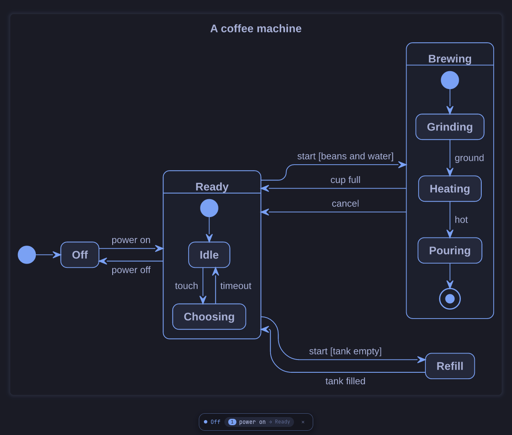
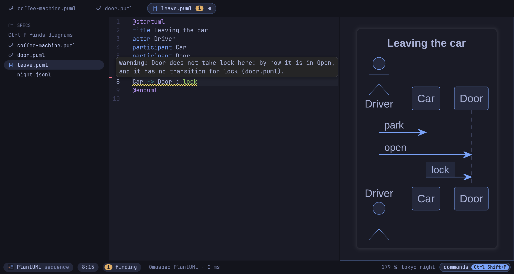
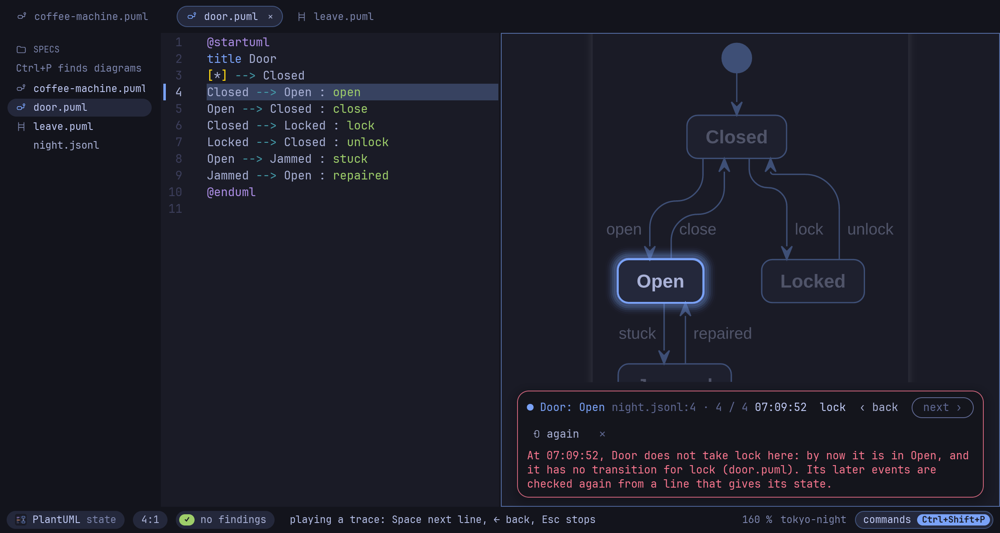
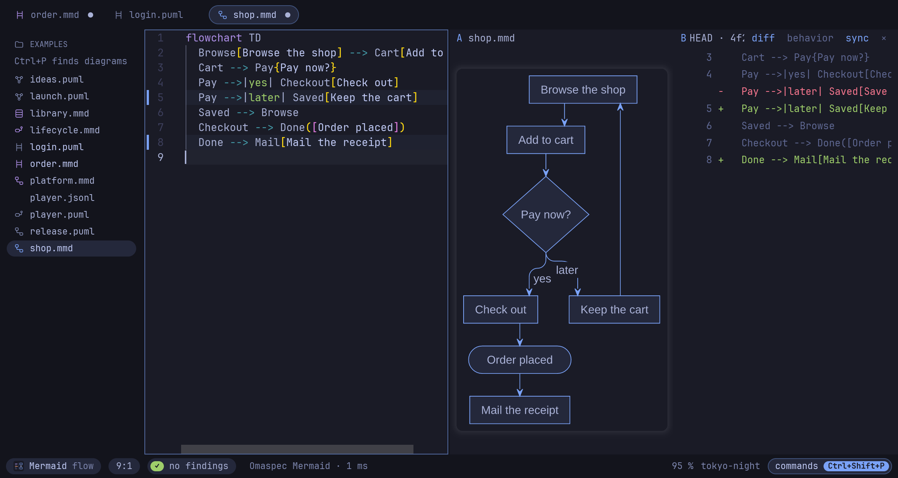
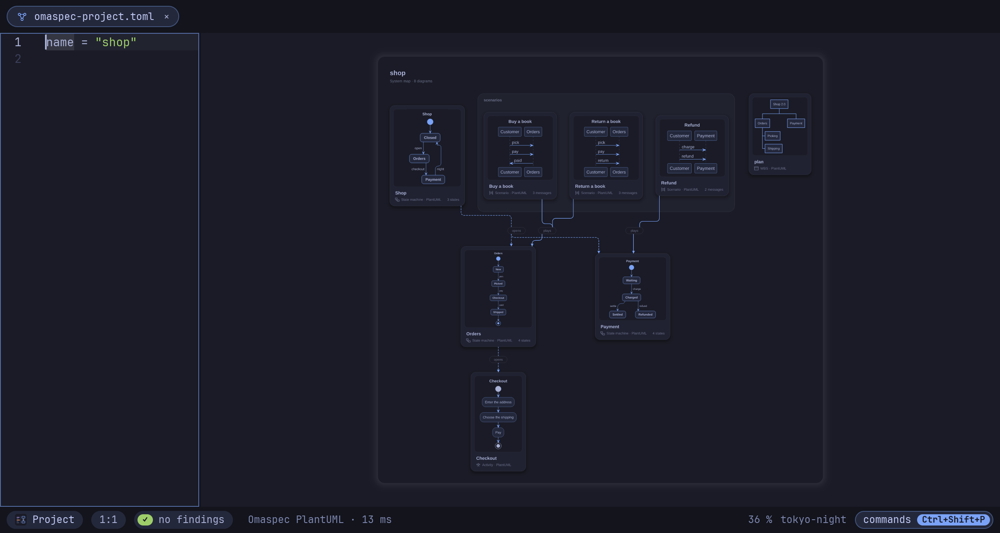
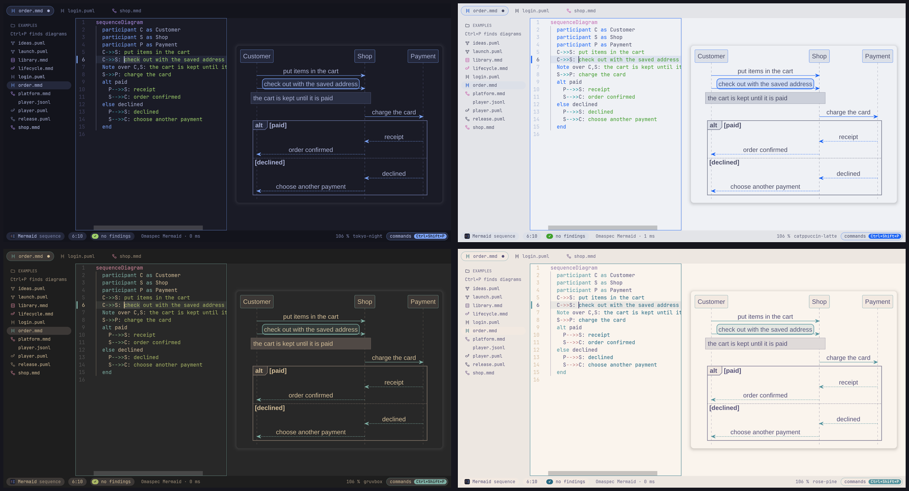

Omaspec is a native PlantUML and Mermaid editor that reads your diagrams as behavior: it checks them while you type, plays them, and holds what a running system logged against them.
A state diagram is the state machine it specifies, a sequence diagram a scenario. Omaspec treats them that way, in both languages alike.
The states the machine is in light up, you pick what happens next, and a light runs along each transition. A scenario unfolds message by message.
omaspec play door.puml -o door.gif writes a play as a GIF for a pull request.

A state no path reaches, a state nothing leaves, one event leading two ways with no guard to choose.
A sequence diagram is checked against the state machines of its project: every message must be an event its receiver can take, in the order the scenario sends them.

omaspec trace run.jsonl plays what a running system logged through its state machines and says where it deviated, with the time.
The editor plays the trace in the diagram, line by line.

omaspec diff compares two versions, or a file with its last commit, by states, transitions and messages. Layout and colors do not count.
In the editor, Compare shows the change as pictures, as lines, or as a glide from one version to the other.

The map is made from the project's diagrams: a tile for each, an arrow where a state of one opens another. Click a tile to dive in, Alt+Left leads back out.
omaspec check DIR lints every diagram, the machines and the links, for CI.

The editor and the diagrams follow omarchy theme and omarchy font set live. A Hyprland binding, a menu entry and a preview window for Neovim users come with it.

Everything the editor understands is a command: for a terminal, a pre-commit hook, CI, or an agent.
$ omaspec lint door.puml # findings, with their lines $ omaspec trace night.jsonl # a recorded trace against the state machines $ omaspec diff door.puml # what changed in the behavior since the last commit $ omaspec convert door.puml # the machine in Mermaid, only if it means the same $ omaspec render door.puml -o door.png # SVG, PNG or PDF, the source inside $ omaspec play door.puml -o door.gif # a play as a GIF that moves $ omaspec check . # a whole project, for CI $ omaspec mcp # an MCP server for AI agents
omaspec mcp serves the command line's tools over MCP: lint, trace, diff, convert, format, render.
omaspec git setup lets git diff and git log -p tell diagrams by their behavior.
Exports carry their source: an SVG, PNG or PDF opens as a diagram again. A project exports as linked SVGs anyone can open.
On Omarchy or any Arch Linux, from the repository. Elsewhere, the binary of the latest release or a build with Rust.
git clone https://github.com/enhapu-afk/omaspec cd omaspec/packaging/aur/omaspec-bin makepkg -si
git clone https://github.com/enhapu-afk/omaspec cd omaspec cargo build --release -p omaspec-app
Or take the binary from the latest release. Then omaspec door.puml opens the editor and Ctrl+Shift+E the gallery of 24 examples.